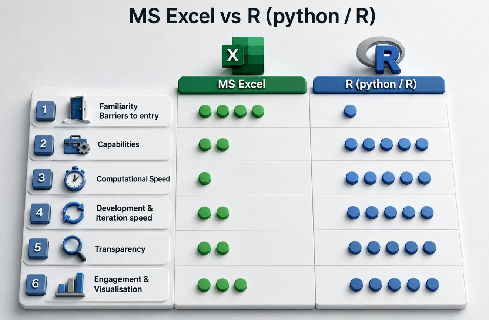
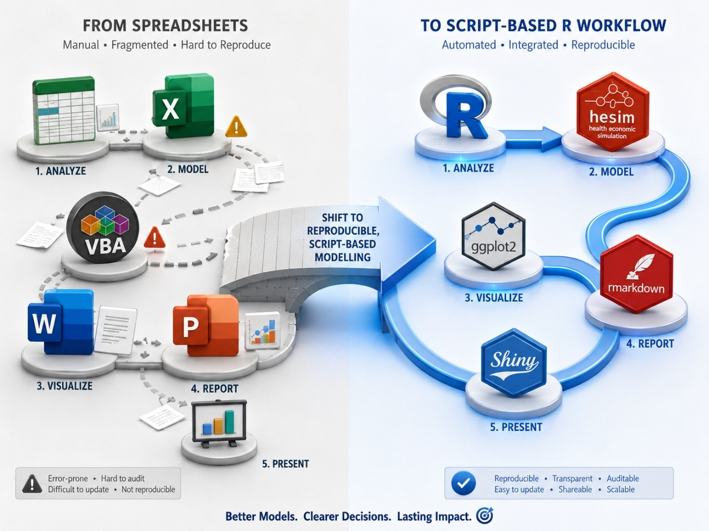
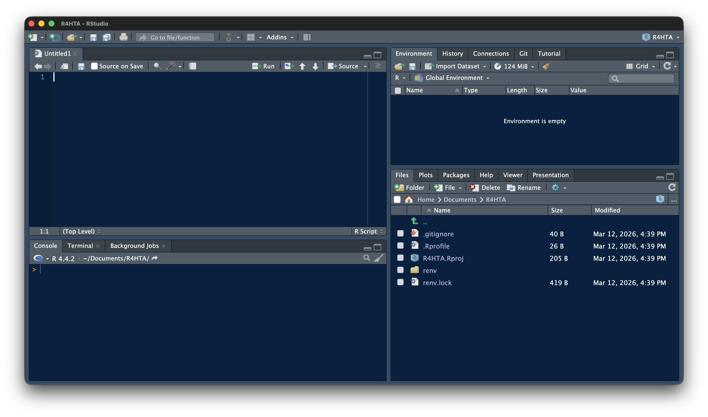
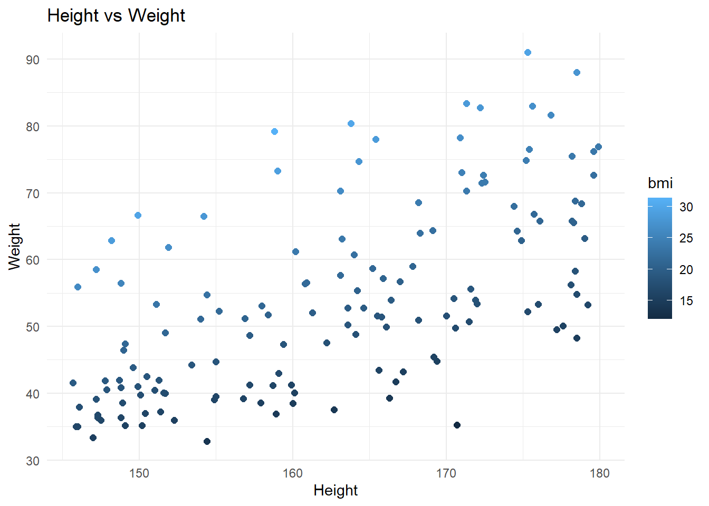

print("Coding for better health decisions.")[1] "Coding for better health decisions."This workshop introduces R as a tool for health technology assessment. It is designed for scientists at Regional Resource Centres (RRCs), health economists, and anyone working in or interested in HTA who currently uses Excel or TreeAge and wants to explore what R can offer.
This is not a coding bootcamp. You will not memorise R syntax. Instead, you will:
Understand why R is increasingly preferred for HTA in academic and policy settings.
See real-world Indian HTA examples implemented in R.
Learn to read R code well enough to understand what a model is doing.
Modify existing code — change inputs, adapt parameters, rerun analyses.
Take home ready-to-use templates for four common HTA model types.
Learn how to use available tools (including generative AI) to support your R workflow.
Please ensure you have:
A side-by-side comparison of how the same HTA tasks look in Excel versus R — making the case for transparency, reproducibility, and scalability.
R does not replace your HTA knowledge. It gives you a different medium to express that knowledge — one that is:

Reproducible: Your entire analysis is a script. Anyone can re-run it and get the same result. The set.seed() function ensures that even probabilistic analyses produce identical output across runs, machines, and collaborators.
Scalable: Running 10,000 PSA iterations takes a fraction of a second. Running 100,000 is equally easy. Excel slows to a crawl; R does not.
Transparent: A reviewer can read your code and see exactly what you did. No hidden cell references, no buried macros. Every assumption is explicit.
Version-controlled: With Git, every change is tracked, documented, and reversible. No more Model_v3_final_FINAL_revised.xlsx.
Free and extensible: No license fees, no vendor lock-in. Thousands of R packages exist for health economics (heemod, hesim, dampack, BCEA), survival analysis (flexsurv, survminer), Bayesian methods, and visualisation.
Shifting the modelling pipeline from spreadsheet software (e.g. MS Excel) to script-based programming languages (e.g R).

R is not replacing your HTA expertise — it is giving that expertise a more powerful medium. The clinical judgement, the model structuring, the parameter selection — that remains yours. R simply makes the execution more reproducible, transparent, and scalable.
When you open RStudio, you see four panels. Understanding what each one does will help you follow along in every session.

- Source Editor (top-left): Where you write and edit code files (.R, .qmd) - Console (bottom-left): Where code runs and output appears - Environment (top-right): Shows all variables and data currently in memory - Files / Plots / Help (bottom-right): File browser, plot viewer, package documentation
Run the chunk below to confirm everything is working. Click the green ▶ button.
print("Coding for better health decisions.")[1] "Coding for better health decisions."If you see the text printed below the chunk, your setup is working correctly.
In R, you store a value under a name using the assignment operator <-. Once stored, you can use the name anywhere in place of the value.
text <- "Coding for better health decisions."
print(text)[1] "Coding for better health decisions."When you see <- in workshop code, you know: this is where a value is stored, and this is what you change to explore a different scenario.
You may occasionally see -> or = used for assignment in older code. Prefer <- in your own work.
R handles all standard arithmetic. These operators appear throughout model calculations for costs, probabilities, and outcomes.
2 + 5 # Addition[1] 773 - 32 # Subtraction[1] 4147 * 7 # Multiplication[1] 32986 / 3 # Division[1] 28.666678 ^ 2 # Exponentiation[1] 64Relational operators compare two values and return TRUE or FALSE. You will encounter these inside conditional checks — for example, testing whether an ICER is below a cost-effectiveness threshold.
5 > 6 # Greater than[1] FALSE5 < 6 # Less than[1] TRUE6 == 6 # Equal to — note the double == for comparison, not single =[1] TRUE8 >= 5 # Greater than or equal to[1] TRUE7 <= 10 # Less than or equal to[1] TRUE9 != 10 # Not equal to[1] TRUEIn R, everything is stored as an object. The three types you will encounter most in this workshop are vectors, matrices, and data frames.
A vector is an ordered collection of values. Create one with c() — short for “combine”.
vec <- c(2, 4, 6, 8, 3, 5.5)
vec[1] 2.0 4.0 6.0 8.0 3.0 5.5Vectors can also have named elements — a pattern you will see constantly in HTA models, where each value corresponds to a health state or treatment strategy:
costs <- c(treatment_A = 5000, treatment_B = 3000, treatment_C = 7000)
coststreatment_A treatment_B treatment_C
5000 3000 7000 You can retrieve a specific element by its position in the vector:
vec[5] # Fifth element of vec[1] 3A matrix is a two-dimensional object with rows and columns. In HTA, you will encounter matrices as transition probability tables for Markov models, where each cell holds the probability of moving from one health state to another.
mat <- matrix(1:36, nrow = 6, ncol = 6, byrow = FALSE)
mat [,1] [,2] [,3] [,4] [,5] [,6]
[1,] 1 7 13 19 25 31
[2,] 2 8 14 20 26 32
[3,] 3 9 15 21 27 33
[4,] 4 10 16 22 28 34
[5,] 5 11 17 23 29 35
[6,] 6 12 18 24 30 36You can access a specific element, an entire column, or an entire row:
mat[3, 5] # Element at row 3, column 5[1] 27mat[, 5] # Entire column 5[1] 25 26 27 28 29 30mat[5, ] # Entire row 5[1] 5 11 17 23 29 35mat1 <- matrix(c(3, 5, 1, 9), nrow = 2, ncol = 2, byrow = FALSE)
mat2 <- matrix(c(7, 4, 2, 8), nrow = 2, ncol = 2, byrow = FALSE)
mat1 %*% mat2 [,1] [,2]
[1,] 25 14
[2,] 71 82A data frame is R’s equivalent of a spreadsheet table — rows are observations, columns are variables.
age <- c(12, 24, NA, 23, 65, 33) # NA = missing value
gender <- c("M", "F", "F", "M", "M", "F")
occu <- factor(c(1, 4, 3, 2, 4, 5), # factor() = categorical variable
levels = c(1:5),
labels = c("Unemp", "Service", "Student", "Business", "Prof"))
dob <- c(as.Date("1993-01-16"), # as.Date() converts text to a date
as.Date("1963-12-24"),
as.Date("1971-01-05"),
as.Date("1982-11-11"),
as.Date("1984-05-15"),
as.Date("1999-03-07"))
df <- data.frame(age, gender, occu, dob)
df age gender occu dob
1 12 M Unemp 1993-01-16
2 24 F Business 1963-12-24
3 NA F Student 1971-01-05
4 23 M Service 1982-11-11
5 65 M Business 1984-05-15
6 33 F Prof 1999-03-07You access a specific column using $:
df$age[1] 12 24 NA 23 65 33A function takes one or more inputs (called arguments), does something with them, and returns an output. The general syntax is:
function_name(argument1 = value1, argument2 = value2, ...)For example, mean() calculates the average of a vector. The na.rm = TRUE argument tells it to remove missing values before calculating — without it, a single NA in the data will make the result NA.
mean(x = df$age, na.rm = TRUE)[1] 31.4Type ? followed by any function name in the Console to open its documentation — arguments, return values, and worked examples:
?mean
?round
?ggplotR’s base installation covers the basics. Packages are collections of additional functions written by the R community that extend what R can do. Install a package once, load it at the start of each session.
# Install a package — only need to do this once
install.packages("dplyr")# Load a package — need to do this each session
library(dplyr)
Attaching package: 'dplyr'The following objects are masked from 'package:stats':
filter, lagThe following objects are masked from 'package:base':
intersect, setdiff, setequal, uniondplyr::glimpse(df)Rows: 6
Columns: 4
$ age <dbl> 12, 24, NA, 23, 65, 33
$ gender <chr> "M", "F", "F", "M", "M", "F"
$ occu <fct> Unemp, Business, Student, Service, Business, Prof
$ dob <date> 1993-01-16, 1963-12-24, 1971-01-05, 1982-11-11, 1984-05-15, 199…Analogy: Installing is like downloading an app. Loading is like opening it. In this workshop, the packages you need are listed at the top of each session file — you do not need to find or choose them yourself.
Key packages used in this workshop:
| Package | Purpose |
|---|---|
ggplot2 |
Graphs and visualisation |
dplyr |
Data manipulation |
readxl, haven, rio |
Importing data |
heemod |
Markov cohort models |
BCEA, dampack |
Cost-effectiveness analysis |
flexsurv |
Survival modelling |
shiny |
Interactive web applications |
A pipe passes the output of one function directly into the next, letting you chain steps in a readable left-to-right sequence without creating intermediate objects. R has two pipe operators — |> (built into R) and %>% (from the tidyverse). They behave the same way in most situations.
df |>
select(age, dob, occu) |>
summarise(mean_age = mean(age, na.rm = TRUE)) mean_age
1 31.4Read this as: take df, then select the age, dob, and occu columns, then calculate the mean age. select() picks columns, summarise() calculates summaries. The pipe replaces deeply nested function calls with a sequence that reads the way you think.
RStudio has a point-and-click import tool. Go to File → Import Dataset and choose your file type. RStudio generates the import code for you — a useful way to learn the syntax before writing it yourself.

Once you know the syntax, code-based import is faster and fully reproducible:
# CSV
data <- read.csv("files/data.csv")
# Excel
library(readxl)
data <- read_excel("files/data.xlsx")
# Stata and SPSS
library(haven)
data <- read_sav("files/data.sav")
data <- read_dta("files/data.dta")The rio package provides a single import() function that detects the file format automatically — the simplest approach when you work with multiple file types:
library(rio)
data <- rio::import("files/data.xlsx")
data <- rio::import("files/data.csv")
data <- rio::import("files/data.sav")
data <- rio::import("files/data.dta")All import commands use relative file paths that only work when the .Rproj file has been opened first. A cannot open file error almost always means this step was skipped.
A for loop repeats a block of code a fixed number of times — once for each value in a sequence. In HTA modelling, loops are used to run the model across time cycles and across thousands of PSA iterations.
library(rio)Warning: package 'rio' was built under R version 4.5.3data <- rio::import("files/data.csv")
library(dplyr)
data <- data |> mutate(bmi = round(wt / ((ht / 100)^2), 1))
for (i in 1:nrow(data)) {
bmi <- round(data$wt[i] / ((data$ht[i] / 100)^2), 2)
cat("BMI of Record No", i, "is", bmi, "\n")
}BMI of Record No 1 is 21.63
BMI of Record No 2 is 20.62
BMI of Record No 3 is 23.7
BMI of Record No 4 is 15.62
BMI of Record No 5 is NA
BMI of Record No 6 is 18.76
BMI of Record No 7 is 14.2
BMI of Record No 8 is 27.02
BMI of Record No 9 is 19.72
BMI of Record No 10 is 21.22
BMI of Record No 11 is 22.52
BMI of Record No 12 is 24.08
BMI of Record No 13 is 15.01
BMI of Record No 14 is 16.43
BMI of Record No 15 is 21.66
BMI of Record No 16 is 15.87
BMI of Record No 17 is NA
BMI of Record No 18 is 17.63
BMI of Record No 19 is 15.78
BMI of Record No 20 is 17.21
BMI of Record No 21 is 16.44
BMI of Record No 22 is 20.54
BMI of Record No 23 is 18.32
BMI of Record No 24 is 21.71
BMI of Record No 25 is 13.78
BMI of Record No 26 is 20.72
BMI of Record No 27 is 29.63
BMI of Record No 28 is 16.34
BMI of Record No 29 is 20.77
BMI of Record No 30 is 17.79
BMI of Record No 31 is 18.06
BMI of Record No 32 is 20.62
BMI of Record No 33 is 22.58
BMI of Record No 34 is 19.58
BMI of Record No 35 is 26.12
BMI of Record No 36 is 18.31
BMI of Record No 37 is 29.66
BMI of Record No 38 is 18.63
BMI of Record No 39 is 22.35
BMI of Record No 40 is 20.96
BMI of Record No 41 is 17.44
BMI of Record No 42 is 14.61
BMI of Record No 43 is 18.25
BMI of Record No 44 is 19.17
BMI of Record No 45 is 18.45
BMI of Record No 46 is 23.62
BMI of Record No 47 is 29.97
BMI of Record No 48 is 17.41
BMI of Record No 49 is 18.63
BMI of Record No 50 is 24.44
BMI of Record No 51 is 17.74
BMI of Record No 52 is 16.76
BMI of Record No 53 is 19.69
BMI of Record No 54 is 16.57
BMI of Record No 55 is 15.15
BMI of Record No 56 is 27.96
BMI of Record No 57 is NA
BMI of Record No 58 is 18.25
BMI of Record No 59 is 15.58
BMI of Record No 60 is 18.13
BMI of Record No 61 is 15.95
BMI of Record No 62 is 14.18
BMI of Record No 63 is 19.47
BMI of Record No 64 is 24.08
BMI of Record No 65 is 18.62
BMI of Record No 66 is 18.07
BMI of Record No 67 is 16.94
BMI of Record No 68 is 18.01
BMI of Record No 69 is 21.54
BMI of Record No 70 is 17.84
BMI of Record No 71 is 18.78
BMI of Record No 72 is 27.89
BMI of Record No 73 is NA
BMI of Record No 74 is 16.23
BMI of Record No 75 is 20.93
BMI of Record No 76 is 18.83
BMI of Record No 77 is 16.45
BMI of Record No 78 is 21.38
BMI of Record No 79 is 26.78
BMI of Record No 80 is 15.64
BMI of Record No 81 is 15.88
BMI of Record No 82 is 16.44
BMI of Record No 83 is 21.5
BMI of Record No 84 is 23.77
BMI of Record No 85 is 26.23
BMI of Record No 86 is 22.52
BMI of Record No 87 is 15.85
BMI of Record No 88 is 17.37
BMI of Record No 89 is 28.52
BMI of Record No 90 is 19.71
BMI of Record No 91 is 31.39
BMI of Record No 92 is 15.45
BMI of Record No 93 is 12.11
BMI of Record No 94 is 21.8
BMI of Record No 95 is 24.86
BMI of Record No 96 is 18.99
BMI of Record No 97 is 24.38
BMI of Record No 98 is 15.84
BMI of Record No 99 is NA
BMI of Record No 100 is 16.69
BMI of Record No 101 is 20.01
BMI of Record No 102 is 23.77
BMI of Record No 103 is 18.7
BMI of Record No 104 is 23.35
BMI of Record No 105 is 18.8
BMI of Record No 106 is 28.97
BMI of Record No 107 is 26.91
BMI of Record No 108 is 15.45
BMI of Record No 109 is 20.78
BMI of Record No 110 is 24.98
BMI of Record No 111 is 17.23
BMI of Record No 112 is 15.52
BMI of Record No 113 is 26.79
BMI of Record No 114 is 21.61
BMI of Record No 115 is 20.35
BMI of Record No 116 is 18.09
BMI of Record No 117 is 21.1
BMI of Record No 118 is 19.5
BMI of Record No 119 is 15.04
BMI of Record No 120 is 17.1
BMI of Record No 121 is 17
BMI of Record No 122 is 18.55
BMI of Record No 123 is 21.34
BMI of Record No 124 is 21.33
BMI of Record No 125 is 17.21
BMI of Record No 126 is 16.98
BMI of Record No 127 is 16.36
BMI of Record No 128 is NA
BMI of Record No 129 is 27.63
BMI of Record No 130 is 24.23
BMI of Record No 131 is 17.74
BMI of Record No 132 is 21.28
BMI of Record No 133 is 18.87
BMI of Record No 134 is 19.58
BMI of Record No 135 is 28.63
BMI of Record No 136 is 23.96
BMI of Record No 137 is 28.41
BMI of Record No 138 is 23.86
BMI of Record No 139 is 27.67
BMI of Record No 140 is 16.28
BMI of Record No 141 is 21.83
BMI of Record No 142 is 15.47
BMI of Record No 143 is 26.42
BMI of Record No 144 is 22.58
BMI of Record No 145 is 16.15
BMI of Record No 146 is 20.54
BMI of Record No 147 is 25.49
BMI of Record No 148 is 16.52
BMI of Record No 149 is 22.95
BMI of Record No 150 is 18.08 When you see a for loop in the workshop code, you know: the model is repeating a calculation. You do not need to understand every line — just recognise that something is being done repeatedly, and that the values at the top of the loop control what is being repeated and how many times.
An if/else block runs different code depending on whether a condition is TRUE or FALSE. You will see this used in cost-effectiveness decisions — is the ICER below the willingness-to-pay threshold? — and in model checks.
if (condition) {
# code to run if condition is TRUE
} else {
# code to run if condition is FALSE
}A simple example:
value <- 5000
if (value > 200) {
cat("High")
} else {
cat("Low")
}Highggplot2 is the standard package for data visualisation in R. It builds plots in layers — you start with the data, map variables to axes, then add geometric elements. The plot below uses the dataset imported in the Loops section.
library(ggplot2)
ggplot(data, aes(x = ht, y = wt, colour = bmi)) +
geom_point(size = 2) +
labs(x = "Height", y = "Weight", title = "Height vs Weight") +
theme_minimal()Warning: Removed 6 rows containing missing values or values outside the scale range
(`geom_point()`).
When you see ggplot in the workshop code, you know: a chart is being created. The aes() part maps variables to visual properties, the geom_ function determines the chart type, and labs() sets the labels. Changing the data or the variables inside aes() changes the plot.
Almost nothing from this session needs to be memorised. Instead, keep these three things in mind throughout the workshop:
Everything else you can look up as needed — or ask an AI tool, as we will discuss in Session 7.
Before moving to Session 3, modify the values below and re-run the chunk. Change the costs and QALYs to see how the ICER and the cost-effectiveness decision change.
# YOUR TASK: Change these values and re-run
cost_A <- 3000 # Cost of intervention A in ₹
cost_B <- 1500 # Cost of intervention B in ₹
qaly_A <- 0.82 # QALYs gained with A
qaly_B <- 0.75 # QALYs gained with B
# ── Do not modify below this line ─────────────────────────────────────────────
icer <- (cost_A - cost_B) / (qaly_A - qaly_B)
cat("ICER = ₹", round(icer, 0), "per QALY gained\n")ICER = ₹ 21429 per QALY gainedwtp <- 100000
if (icer < wtp) {
cat("→ Cost-effective at WTP = ₹", format(wtp, big.mark = ",", scientific = FALSE), "\n")
} else {
cat("→ NOT cost-effective at WTP = ₹", format(wtp, big.mark = ",", scientific = FALSE), "\n")
}→ Cost-effective at WTP = ₹ 100,000 If you ran this and changed the result — you are ready for the rest of the workshop.
| Concept | Syntax | Example |
|---|---|---|
| Assign a value | name <- value |
cost <- 5000 |
| Named vector | c(name = value) |
c(A = 5000, B = 3000) |
| Index a vector | vec[n] |
vec[5] |
| Matrix multiply | %*% |
trace %*% tm |
| Access a column | df$col |
df$age |
| Function syntax | fn(arg = val) |
mean(x, na.rm = TRUE) |
| Pipe | \|> |
df \|> select(age) |
| If / else | if (cond) {} else {} |
if (icer < wtp) {...} |
| Get help | ?function |
?mean |
| Comment | # |
# this is a note |
Comments
In R, the
#symbol marks a comment — anything after it on that line is ignored by R. Comments are notes for the human reading the code, not instructions for the computer. You will see them throughout every session. Read them — they are often the clearest explanation of what a section of code is doing.